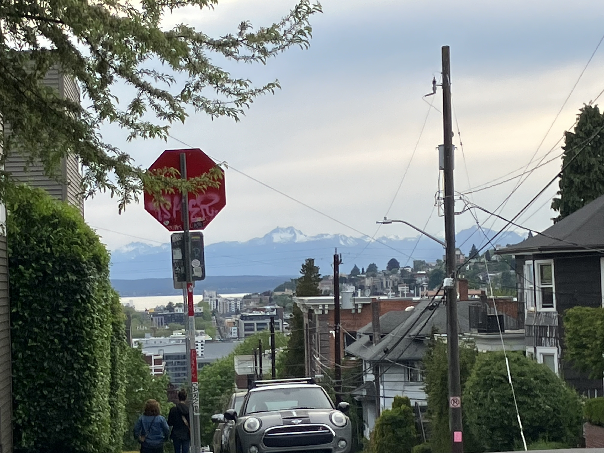
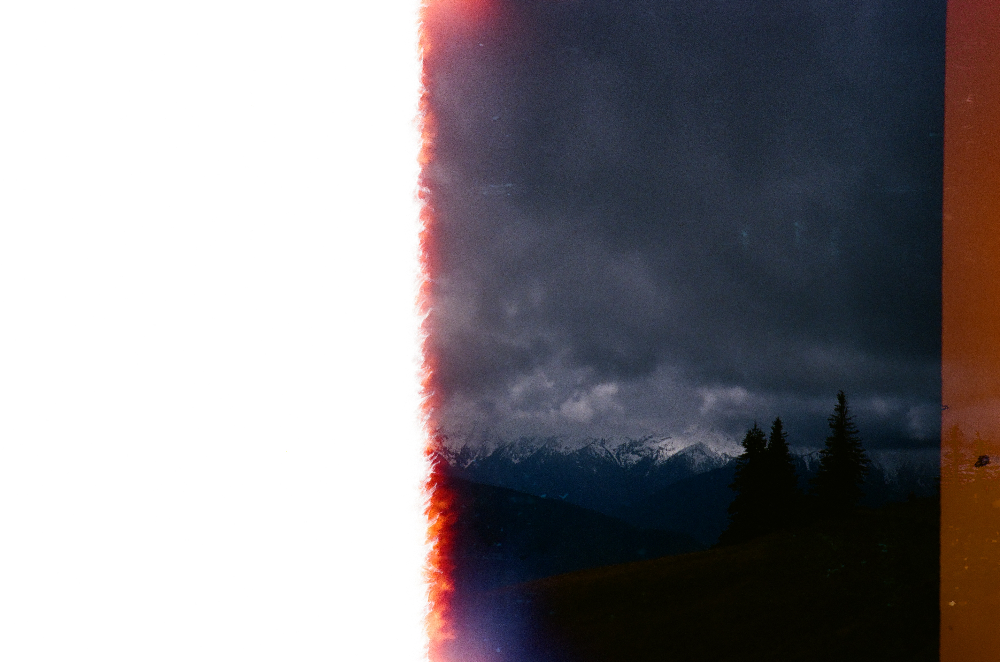
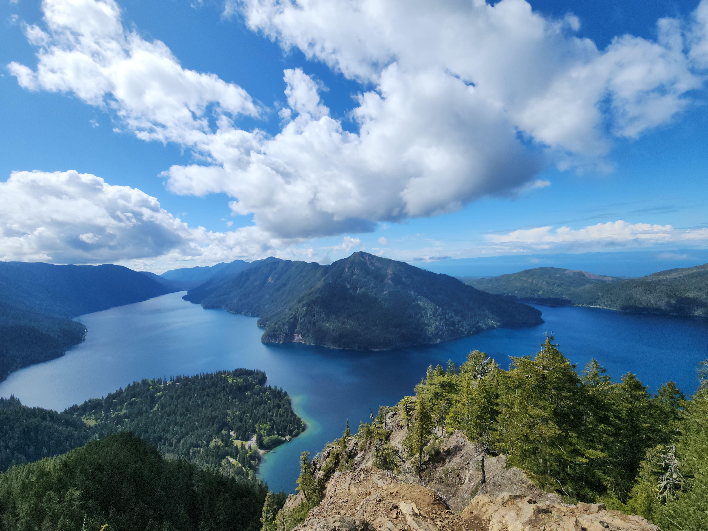
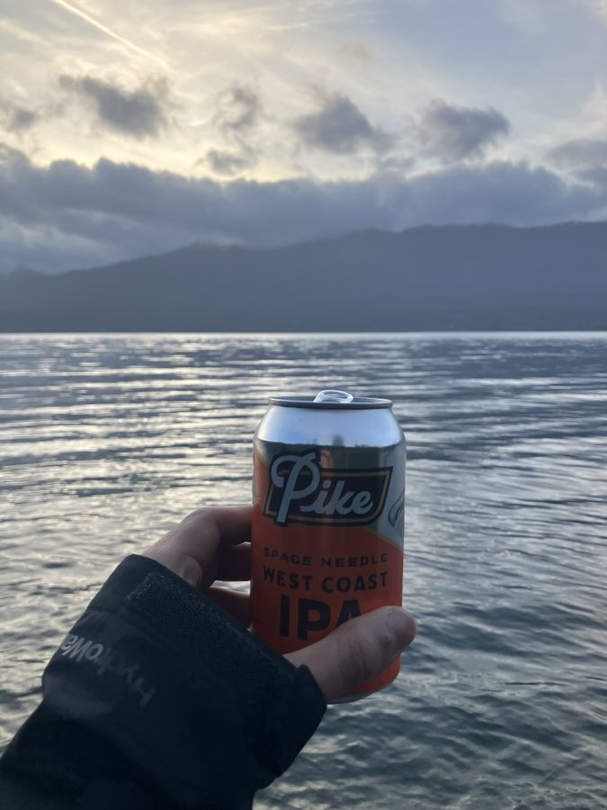
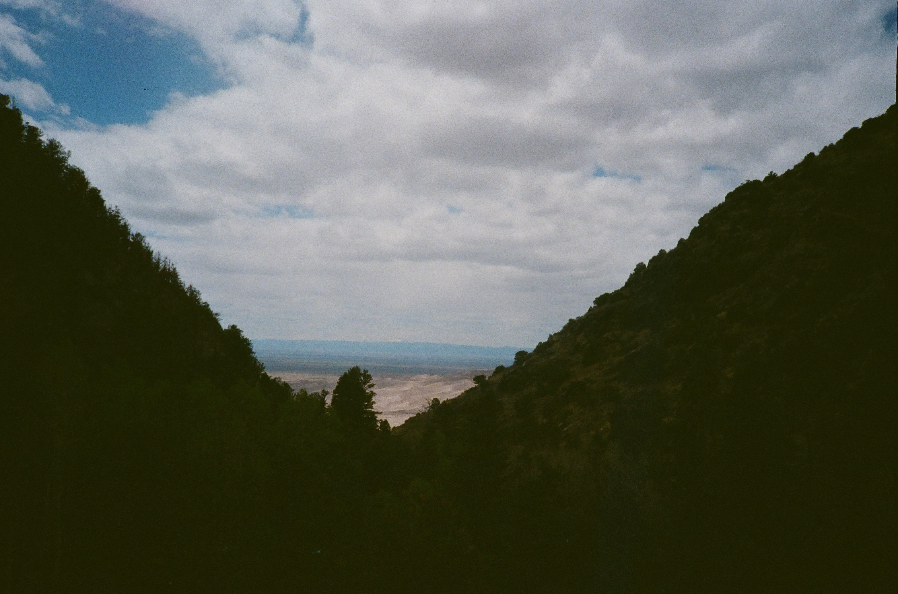
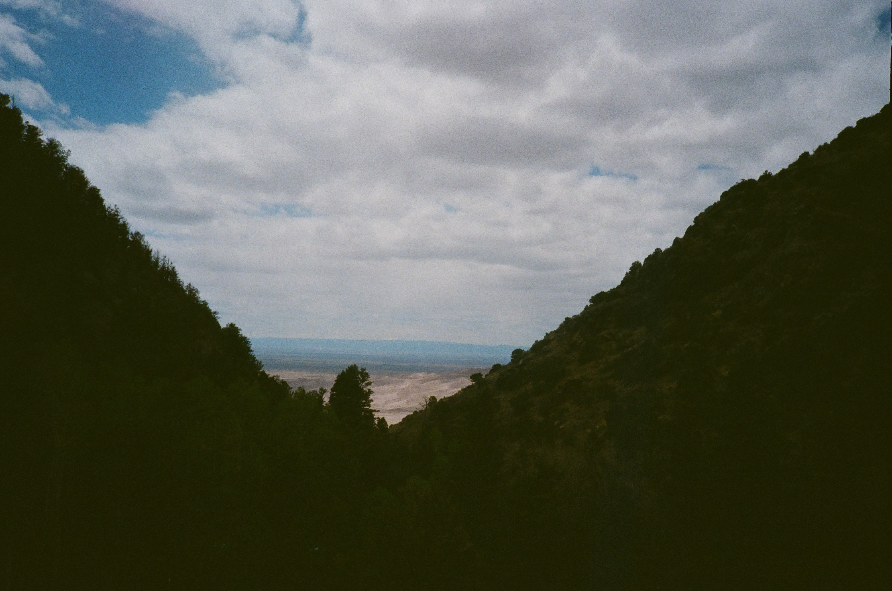

This summer, my internship started on June 2nd. I knew that I had to take the time to do something extra fun, so I decided to stitch together a roughly 2 week long trip: Washington → Colorado → Oregon. Along the way, I brought an Olympus XA2(35mm film camera) to try it out; mostly all of the pictures on this post are from this camera. Here is my trip report!
Washington: May 9th 2025 → May 15th 2025
I landed in Seatac in the late hours of the afternoon on the 9th. My first stop was my sisters place, where I was going to spend the next two nights. While walking, Seattle greeted me with a great view of the Olympic Mountains.
While in Seattle, I visited my favorite park, Cal Anderson. There is always so much going on at Cal Anderson, and this time I bore witness to a recreational dodge ball game, a mini concert/moshpit in the adjoining skate park, a pickup soccer game, and people juggling fire, all simultaneously. Unfortunately I didn't take any pictures, but I promise you it actually happened. In the early morning of May 12th, Avi, Krish, and I headed to Olympic National Park. Our first stop was Hurricane Ridge. While there was snow everywhere, so we couldn't hike anywhere in that ridge area, the view was spectacular. Around this time, though, I ended up dropping my camera, and the back door popped open. As it turns out, the film fell off the gear mechanism around this time, so the rest of the film pictures from Washington were either exposed to the light, or were all recorded on one shot. I did get one photo, though, that I suspect is Hurricane Ridge. It is half burned due to the light exposure when the back popped open, but something is better than nothing I guess.

After walking around a bit, we left to go to Mount Storm King. The trail comprised of many steep and winding switchbacks, followed by some mild rock scramble to reach the true summit.

The view from the summit was stunning(as expected) and we spent around half an hour up there. A couple birds, later identified as Gray Jays, came and visited us too.

We capped off this packed day by getting some food and then heading to Rialto beach in an attempt to catch the sunset over the horizon. A cloudy sky made it difficult to see much of anything, and so we left and checked into the Airbnb in Forks.
The next morning, we got some food at one of odd coffee trailer things and headed to the Hoh Rain Forest. Our Hall of Mosses hike got detoured by the impossible search for a four leaf "wood sorrel", but after we decided to forgo any planned hike in favor of just walking straight into the valley on the Hoh River Trail. After hiking a couple of miles, we reached Tom Creek, which signaled a good turn around point.

We then went to the beach again, this time to see the tree of life. The tide was pretty low, and a yellow sticky foam covered the beach. Something I never realized was how far up the waves come during low tide.

People had stashed a lot of memorabilia underneath the little alcove under the tree, from rocks with their name on it to notes. Being in proximity of Lake Quinault meant that it was also on our docket. In an attempt to complete a loop around the lake, we ended up seeing a salmon! We also were turned around by a road closure prematurely, but it all paid off since some Roosevelt Elk decided to wander around the road.

Eventually we located a restaurant on Lake Quinault, with a beautiful view of the lake, and "enjoyed" (it was pretty bad) a six pack of some local IPA on a dock.  We visited a couple other spots on this trip, mainly The Devil's Punchbowl and Cape Flattery
 I then flew out to Denver on May 15th.
I then flew out to Denver on May 15th.
Colorado: May 15th 2025 → May 20th 2025
After landing in Denver, we picked up the car we got on Turo, and started our drive to Buena Vista, first stopping at Target and REI on the way. At Buena Vista, we chilled and looked at the weather on a couple of mountains, and after seeing predicted gusts of up to 70 miles per hour, we pivoted and decided to checkout sand dunes national park. It was a lot of fun! We did a calm hike to get used to the elevation(which is actually surprisingly a thing, I was definitely way more out of breath), did some sand-boarding, and just walked around the dunes. 
We quickly realized that the name of the game when in high elevation is to be adaptable, and so we threw our plan out the window. That night, we checked the weather, and
decided the next day we were going to hike Quandary Peak. Under dense tree coverage, we zig-zagged through switchbacks, much like those on Storm King.

We quickly realized that the name of the game when in high elevation is to be adaptable, and so we threw our plan out the window. That night, we checked the weather, and
decided the next day we were going to hike Quandary Peak. Under dense tree coverage, we zig-zagged through switchbacks, much like those on Storm King.
 As the tree line faded away, though, we entered the snow field. We lost the trail under the white expanse, instead opting to follow footprints up the mountain.
As the tree line faded away, though, we entered the snow field. We lost the trail under the white expanse, instead opting to follow footprints up the mountain.
 The sun shined bright off the snow; squinting, we trudged along making slow but steady progress. The cool and crisp air felt amazing.
Somewhere around 13000 feet, though, due to difficulties with altitude, we decided it would be best to turn around.
Even though it may have not ended as we wanted it to, it was both a very valuable learning experience, and just outright a blast.
The sun shined bright off the snow; squinting, we trudged along making slow but steady progress. The cool and crisp air felt amazing.
Somewhere around 13000 feet, though, due to difficulties with altitude, we decided it would be best to turn around.
Even though it may have not ended as we wanted it to, it was both a very valuable learning experience, and just outright a blast.
 Our final two days on the trip was spent on a backpacking excursion in the aptly named Lost Creek Wilderness. In retrospect, when planning this trip, I should have
confirmed online the location of supposed creeks. With the help of the 14ers forum, I picked a loop, which according to the maps had a creek running through it around six
miles in.
Our final two days on the trip was spent on a backpacking excursion in the aptly named Lost Creek Wilderness. In retrospect, when planning this trip, I should have
confirmed online the location of supposed creeks. With the help of the 14ers forum, I picked a loop, which according to the maps had a creek running through it around six
miles in.
 To our surprise, there was no creek! But, luckily, we had walked by a section where snow still decorated the sides of the trail.
This was a scary prospect to us: we were not really sure if boiling snow was even a feasible method. But, as the daylight dwindled, we decided we did not have enough time
to leave, so we just decided to try it. Setting up camp, boiling snow, and feasting on peak refuel meals took us to sunset, where from there we huddled into the tent and
tried to sleep(I was just too scared of bears to get much sleep).
To our surprise, there was no creek! But, luckily, we had walked by a section where snow still decorated the sides of the trail.
This was a scary prospect to us: we were not really sure if boiling snow was even a feasible method. But, as the daylight dwindled, we decided we did not have enough time
to leave, so we just decided to try it. Setting up camp, boiling snow, and feasting on peak refuel meals took us to sunset, where from there we huddled into the tent and
tried to sleep(I was just too scared of bears to get much sleep).

 That morning, the sentiment around was to pack up and hike back down. It was a fun time, but I think
backpacking for the sake of backpacking is definitely something I'm not too used to, but want to do more to get used to it.
After returning from the backpacking trip, I flew out to Seattle the next day, in order to drive down to Oregon.
That morning, the sentiment around was to pack up and hike back down. It was a fun time, but I think
backpacking for the sake of backpacking is definitely something I'm not too used to, but want to do more to get used to it.
After returning from the backpacking trip, I flew out to Seattle the next day, in order to drive down to Oregon.
Oregon: May 20th 2025 → May 26th 2025
I landed in Washington, where I slept for the night before driving down to Oregon the next day. A beautiful sunset painted the skies pink and orange, a perfect backdrop for the rolling green fields. The next day, we attempted to hike down to a beach, an idea quickly abandoned as berry shrubs started to take over the trail. Using the iPhone, it seems that they were a
variety of berries, like salmon berries(they didn't taste very good though).
The next day, we attempted to hike down to a beach, an idea quickly abandoned as berry shrubs started to take over the trail. Using the iPhone, it seems that they were a
variety of berries, like salmon berries(they didn't taste very good though).
 An actual trip to the coastline was due, and so we went later in the afternoon.
An actual trip to the coastline was due, and so we went later in the afternoon.
 A couple more pictures I would like to share are displayed below.
A couple more pictures I would like to share are displayed below.